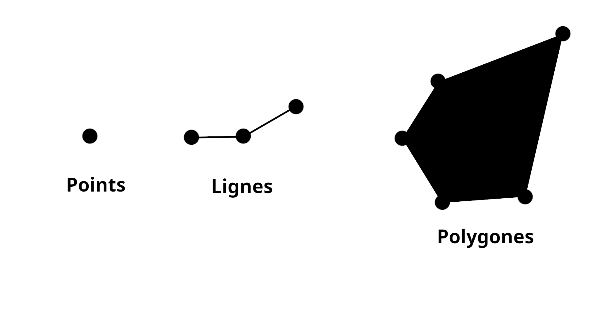

2 Données vectorielles
Objectifs spécifiques:
À la fin de ce chapitre, vous
- connaîtrez les formes géométriques des vecteurs
- connaîtrez les différents formats de fichiers de données vectorielles et comprendrez leur structure
- saurez créer, importer, modifier et afficher sur une carte des couches vectorielles
- saurez faire des opérations de base dans la Table d’Attributs
- pourrez créer une symbologie simple pour l’affichage d’une couche vectorielle.
Il existe deux formats principaux de données géospatiales : Les vecteurs et les matrices (rasters). Ce chapitre détaille les types de données vectorielles ainsi que leur structure, tandis que les données matricielles sont présentées au chapitre 3.
2.1 Géométries
Les données vectorielles ont toujours une seule géométrie : points, lignes ou polygones (Figure 2.1). Dans tous ces cas, l’information représentant leur forme est enregistrée sous forme de points ou de plusieurs points (les sommets des lignes et des polygones), ce qui en fait un format très léger comparativement aux données matricielles.
2.1.1 Points
Les vecteurs sous forme de points sont utiles pour représenter une information… ponctuelle.
Pensez à des points d’échantillonnage, les coordonnées d’une adresse, l’emplacement d’une voiture, une borne géodésique, etc. Toutes données adimensionnelles, c’est-à-dire qu’elles n’ont ni longueur, ni superficie, sont mieux représentées par des points. Il s’agit des coordonnées lat/long ou alors x/y, et de la forme la plus simple de données vectorielles. Prenez par exemple cette représentation de l’emplacement de sites de camping.
2.1.2 Lignes
Les lignes ont une seule dimension, soit la longueur, mais leur superficie est nulle comme pour les points. Leur forme la plus simple est un segment, soit une ligne entre deux points, mais elles peuvent avoir plusieurs sommets et former une polyligne. On peut même créer une polyligne fermée, qui ressemble à un polygone mais n’a aucune superficie.

Les lignes (ou polylignes) sont particulièrement utiles pour représenter toutes formes de réseaux, que ce soit le réseau routier, le réseau hydrique, le réseau de transports aériens, ou tout autre. Elles peuvent aussi être utiles pour marquer des limites, par exemple les limites d’une municipalité. Enfin, on utilise souvent les isolignes, notamment pour représenter les courbes d’altitude sur une carte ou alors les zones de températures sur une carte météorologique, pour délimiter des variations d’informations continues. La Figure 2.4 montre un exemple (assez mauvais puisqu’il manque la symbologie!) de courbes de niveaux de l’épaisseur de neige dans un champ.
Si nous revenons à notre exemple de sites de camping, il est maintenant possible de visualiser le réseau des sentiers pédestres.
2.1.3 Polygones
Les polygones sont des objets à deux dimensions, avec un contour et une surface. Ils sont utiles justement pour représenter la surface et la superficie des objets. La Figure 2.6 montre différentes formes de polygones : Des polygones simples, complexes, troués, ainsi que des multipolygones. Et oui, un amas de plusieurs polygones peut être une seule entité! La même chose existe pour les points (multipoints) et les lignes (multilignes). C’est pratique lorsque plusieurs surfaces font partie de la même entité et partagent les mêmes attributs; on sauve alors de l’espace de stockage!
Les entités polygonales sont très utiles pour représenter des bâtiments, des zones de gestion, des champs, des étendues d’eau, etc. Si on revient à notre exemple, on peut maintenant représenter la forme des bâtiments et des tentes sur notre site de camping (Figure 2.7).
Et quand on met tout ensemble, on obtient…
… Comme quoi on peut faire dire ce qu’on veut aux données, d’où l’importance d’une symbologie juste! (comme vous le verrez au Chapitre 5)
Notez qu’il existe d’autres géométries qui vectorielles qui ne seront pas abordées dans ce cours. Les représentations 2.5D (simulation d’une troisième dimension), 3D, et même 4D et + si vous ajoutez la variable temporelle ou d’autres variables. Il existe plusieurs façons de représenter ces autres dimensions, mais cela ne figure pas dans les objectifs de ce cours.
2.2 Les attributs
Un des avantages majeurs des données vectorielles et leur capacité à stocker une table d’attributs contenant de nombreuses informations géolocalisées. Chaque entité (ligne dans la table d’attribut) contient un ou plusieurs attributs (colonnes). Il est possible de classer les données de façon très efficace et d’exécuter rapidement des calculs en fonction de ces attributs pour divers objets spatiaux.
La table d’attributs est un élément important des SIG et nous l’aborderons plus en détail un peu plus loin dans le cours, mais pour l’instant vous pouvez simplement considérer les attributs des vecteurs comme des variables.
2.3 Formats de données vectorielles
Les données vectorielles peuvent être enregistrées sous différents formats selon l’utilisation qu’on souhaite en faire. Dans le cadre de ce cours, vous utiliserez principalement les données au format Shapefile ainsi que les formats de texte délimité (csv), mais il existe de nombreux formats optimisés par exemple pour les sig web ou l’affichage web.
2.3.1 Shapefile
Le format Shapefile est certainement le plus courant et le plus connu pour les données vectorielles. Développé par ESRI, une donnée vectorielle est en fait composée de plusieurs fichiers différents, dont certains sont facultatifs, que nous détaillerons rapidement ici. Pour fonctionner efficacement, une couche shapefile doit contenir au minimum les 4 fichiers suivants.
*.dbf: Contient les attributs*.shp: Contient la forme, la géométrie de l’objet*.shx: Contient l’index de la géométrie*.prj: Contient la projection au format WKT (vous verrez les projections plus en détail au chapitre 4)
Techniquement, le fichier *.prj est parfois facultatif, mais sans lui les informations concernant le système de coordonnées et la projection de votre couche seront absentes, ce qui rendra vos opérations beaucoup moins agréables. La meilleure pratique est donc de toujours l’intégrer.
Les autres fichiers facultatifs peuvent contenir par exemple les métadonnées ou d’autres types d’index, mais ne seront pas utilisés dans ce cours.
Lorsque vous transmettez une couche shapefile ou que vous la diffusez sur le web, veillez d’abord à réunir tous ces fichiers dans un dossier compressé *.zip; les applications web ne prennent que ce format, et cela facilitera aussi la gestion des fichiers pour tout le monde.
2.3.2 Formats de texte délimité (csv)
Il arrive souvent que les données ponctuelles soit enregistrées au format *.csv. Ce format a l’avantage d’être très léger et peut être utilisé facilement dans votre flux de travail avec d’autres applications (par exemple sur un tableur comme MS Excel ou avec R ou un autre langage de programmation). Le format *.csv n’est constitué que d’un seul fichier ce qui le rend polyvalent.
Bien que très pratique, les fichiers *.csv ont un défaut majeur : Ils ne contiennent pas l’information du système de référence et de projection cartographique. Lors de l’importation dans un logiciel de SIG comme QGIS, il est donc nécessaire de spécifier le système de projection utilisé lors de l’enregistrement des données. Si vous n’êtes pas attentif et que vous ne notez pas l’information à un endroit sûr, il peut devenir ardu de retrouver la projection, et les données peuvent devenir très difficiles à utiliser. Pour ces raisons, je vous suggère d’utiliser plutôt les Shapefile lorsque c’est possible.
2.3.3 Autres formats
De nombreux autres formats existent, en voici ici quelques exemples ainsi que leurs usages principaux. Pour plus de détails, veuillez consulter la page des standards de l’OGC.
- Geodatabase : Il existe différents formats de Geodatabase (ex. Geopackage). Leur rôle consiste à stocker de façon précise des séries de données dans des logiciels, comme une base de données.
- GML (Geography Markup Language) : Format de balises XML pour les données géospatiales. Enregistre en un seul fichier les attributs, les formes et les projections.
- GeoJSON : Format compact sous forme de texte, sans balises. Il s’agit du format le plus compact, donc il est souvent utilisé en cartographie web.
- KML (Keyhole Markup Language) : Développé par Google et récemment intégré dans les standards de l’OGC, KML est aussi un langage de balises basé sur XML. Il se distingue de GML par sa volonté d’inclure des marqueurs de visualisation, des images et des annotations. Par le passé, les fichier KML avaient le problème majeur de ne pas enregistrer les systèmes de projection et d’utiliser uniquement le système web international (EPSG:4326); ce problème pourrait être résolu avec le partenariat entre Google et l’OGC.
- GeoRSS : Un peu comme les données RSS classiques (par exemple les flux RSS pour l’accès automatique et en temps réel aux données de publications web), GeoRSS est un format léger qui vise à générer un flux de données pouvant être extraites par différentes applications. Ce format peut être pratique pour automatiser l’accès en temps réel à vos données d’échantillonnage, par exemple.
- Formats web : Web Map Service (WMS) ou Web Feature Service (WFS) sont des exemples de formats basés sur des protocoles HTTP et diffusent respectivement des images ou des données au format GML. En général, on diffuse sur un serveur cartographique des services cartographiques via le protocole HTTP, puis on y accède en effectuant des requêtes. Plusieurs organismes gouvernementaux diffusent des données sous forme de services web, donc il est utile d’apprendre à y accéder.
2.4 Manipulations simples des données vectorielles
Section incomplète!
2.4.1 Créer, importer, modifier ou exporter
Créer une nouvelle couche vectorielle 
Ajouter une couche vectorielle existante 
Ajouter une couche de texte délimité 
Ajouter une couche GPS